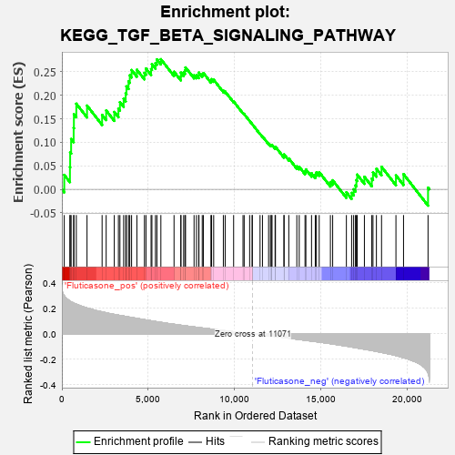
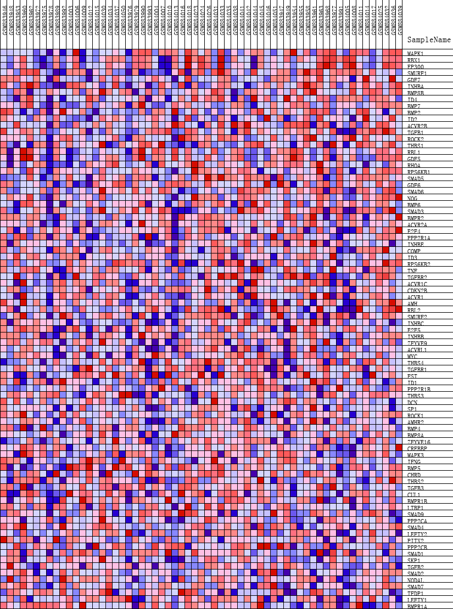
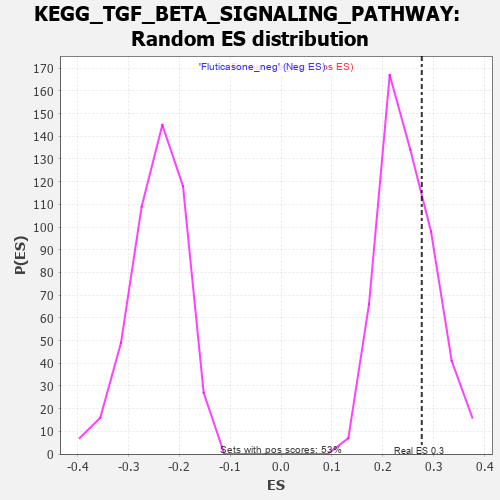

| | | Dataset | GSEA_expr_Flu.GSEA_timepoint.cls#Fluticasone |
| Phenotype | GSEA_timepoint.cls#Fluticasone |
| Upregulated in class | Fluticasone_pos |
| GeneSet | KEGG_TGF_BETA_SIGNALING_PATHWAY |
| Enrichment Score (ES) | 0.2765623 |
| Normalized Enrichment Score (NES) | 1.1173269 |
| Nominal p-value | 0.27977315 |
| FDR q-value | 1.0 |
| FWER p-Value | 0.965 |
Table: GSEA Results Summary

Fig 1: Enrichment plot: KEGG_TGF_BETA_SIGNALING_PATHWAY
Profile of the Running ES Score & Positions of GeneSet Members on the Rank Ordered List
| PROBE | DESCRIPTION
(from dataset) | GENE SYMBOL | GENE_TITLE | RANK IN GENE LIST | RANK METRIC SCORE | RUNNING ES | CORE ENRICHMENT | | 1 | MAPK1 | NA | | | 138 | 0.300 | 0.0307 | Yes |
| 2 | RBX1 | NA | | | 467 | 0.258 | 0.0472 | Yes |
| 3 | EP300 | NA | | | 480 | 0.256 | 0.0784 | Yes |
| 4 | SMURF1 | NA | | | 536 | 0.251 | 0.1070 | Yes |
| 5 | GDF7 | NA | | | 683 | 0.243 | 0.1303 | Yes |
| 6 | INHBA | NA | | | 697 | 0.242 | 0.1597 | Yes |
| 7 | BMP8B | NA | | | 837 | 0.233 | 0.1820 | Yes |
| 8 | ID4 | NA | | | 1458 | 0.203 | 0.1780 | Yes |
| 9 | BMP7 | NA | | | 2332 | 0.173 | 0.1582 | Yes |
| 10 | BMP2 | NA | | | 2568 | 0.165 | 0.1676 | Yes |
| 11 | ID2 | NA | | | 3039 | 0.152 | 0.1644 | Yes |
| 12 | ACVR2B | NA | | | 3278 | 0.147 | 0.1714 | Yes |
| 13 | TGFB1 | NA | | | 3366 | 0.145 | 0.1852 | Yes |
| 14 | ROCK2 | NA | | | 3581 | 0.140 | 0.1925 | Yes |
| 15 | THBS1 | NA | | | 3699 | 0.137 | 0.2040 | Yes |
| 16 | RBL1 | NA | | | 3743 | 0.136 | 0.2188 | Yes |
| 17 | GDF5 | NA | | | 3865 | 0.133 | 0.2296 | Yes |
| 18 | RHOA | NA | | | 3938 | 0.131 | 0.2425 | Yes |
| 19 | RPS6KB1 | NA | | | 4042 | 0.128 | 0.2535 | Yes |
| 20 | SMAD5 | NA | | | 4348 | 0.121 | 0.2542 | Yes |
| 21 | GDF6 | NA | | | 4786 | 0.111 | 0.2474 | Yes |
| 22 | SMAD6 | NA | | | 4875 | 0.109 | 0.2568 | Yes |
| 23 | NOG | NA | | | 5172 | 0.102 | 0.2556 | Yes |
| 24 | BMP6 | NA | | | 5220 | 0.101 | 0.2659 | Yes |
| 25 | SMAD3 | NA | | | 5426 | 0.097 | 0.2683 | Yes |
| 26 | BMPR2 | NA | | | 5509 | 0.095 | 0.2762 | Yes |
| 27 | ACVR2A | NA | | | 5740 | 0.090 | 0.2766 | Yes |
| 28 | E2F4 | NA | | | 6503 | 0.075 | 0.2500 | No |
| 29 | PPP2R1A | NA | | | 6898 | 0.067 | 0.2398 | No |
| 30 | INHBE | NA | | | 6902 | 0.067 | 0.2480 | No |
| 31 | COMP | NA | | | 7061 | 0.064 | 0.2485 | No |
| 32 | ID3 | NA | | | 7136 | 0.063 | 0.2529 | No |
| 33 | RPS6KB2 | NA | | | 7170 | 0.062 | 0.2591 | No |
| 34 | TNF | NA | | | 7664 | 0.054 | 0.2425 | No |
| 35 | TGFBR2 | NA | | | 7804 | 0.052 | 0.2424 | No |
| 36 | ACVR1C | NA | | | 7934 | 0.050 | 0.2425 | No |
| 37 | CDKN2B | NA | | | 7947 | 0.049 | 0.2480 | No |
| 38 | ACVR1 | NA | | | 8138 | 0.046 | 0.2448 | No |
| 39 | AMH | NA | | | 8207 | 0.045 | 0.2471 | No |
| 40 | RBL2 | NA | | | 8642 | 0.038 | 0.2313 | No |
| 41 | SMURF2 | NA | | | 8681 | 0.037 | 0.2341 | No |
| 42 | INHBC | NA | | | 8802 | 0.035 | 0.2328 | No |
| 43 | E2F5 | NA | | | 9362 | 0.026 | 0.2097 | No |
| 44 | INHBB | NA | | | 9467 | 0.024 | 0.2078 | No |
| 45 | ZFYVE9 | NA | | | 9958 | 0.016 | 0.1867 | No |
| 46 | ACVRL1 | NA | | | 10502 | 0.008 | 0.1622 | No |
| 47 | MYC | NA | | | 10570 | 0.007 | 0.1599 | No |
| 48 | THBS4 | NA | | | 10887 | 0.003 | 0.1453 | No |
| 49 | TGFBR1 | NA | | | 11034 | 0.001 | 0.1385 | No |
| 50 | FST | NA | | | 11039 | 0.001 | 0.1384 | No |
| 51 | ID1 | NA | | | 11490 | -0.006 | 0.1180 | No |
| 52 | PPP2R1B | NA | | | 11631 | -0.009 | 0.1125 | No |
| 53 | THBS3 | NA | | | 11986 | -0.014 | 0.0975 | No |
| 54 | DCN | NA | | | 12093 | -0.016 | 0.0945 | No |
| 55 | SP1 | NA | | | 12145 | -0.017 | 0.0942 | No |
| 56 | ROCK1 | NA | | | 12185 | -0.018 | 0.0946 | No |
| 57 | AMHR2 | NA | | | 12362 | -0.021 | 0.0888 | No |
| 58 | BMP4 | NA | | | 12384 | -0.021 | 0.0904 | No |
| 59 | BMP8A | NA | | | 12876 | -0.029 | 0.0709 | No |
| 60 | ZFYVE16 | NA | | | 12883 | -0.029 | 0.0743 | No |
| 61 | CREBBP | NA | | | 13156 | -0.034 | 0.0657 | No |
| 62 | MAPK3 | NA | | | 13622 | -0.042 | 0.0490 | No |
| 63 | IFNG | NA | | | 13762 | -0.044 | 0.0479 | No |
| 64 | BMP5 | NA | | | 14098 | -0.050 | 0.0383 | No |
| 65 | CHRD | NA | | | 14147 | -0.051 | 0.0424 | No |
| 66 | THBS2 | NA | | | 14475 | -0.057 | 0.0341 | No |
| 67 | TGFB3 | NA | | | 14692 | -0.061 | 0.0315 | No |
| 68 | CUL1 | NA | | | 14757 | -0.062 | 0.0361 | No |
| 69 | BMPR1B | NA | | | 14920 | -0.065 | 0.0365 | No |
| 70 | LTBP1 | NA | | | 15570 | -0.077 | 0.0155 | No |
| 71 | SMAD9 | NA | | | 15701 | -0.080 | 0.0193 | No |
| 72 | PPP2CA | NA | | | 16496 | -0.096 | -0.0062 | No |
| 73 | SMAD4 | NA | | | 16799 | -0.103 | -0.0076 | No |
| 74 | LEFTY2 | NA | | | 16916 | -0.106 | 0.0001 | No |
| 75 | PITX2 | NA | | | 17022 | -0.108 | 0.0086 | No |
| 76 | PPP2CB | NA | | | 17077 | -0.110 | 0.0197 | No |
| 77 | SMAD1 | NA | | | 17122 | -0.111 | 0.0313 | No |
| 78 | SKP1 | NA | | | 17540 | -0.121 | 0.0267 | No |
| 79 | TGFB2 | NA | | | 17969 | -0.131 | 0.0228 | No |
| 80 | SMAD2 | NA | | | 18038 | -0.133 | 0.0360 | No |
| 81 | NODAL | NA | | | 18237 | -0.138 | 0.0438 | No |
| 82 | SMAD7 | NA | | | 18534 | -0.146 | 0.0479 | No |
| 83 | TFDP1 | NA | | | 19369 | -0.171 | 0.0298 | No |
| 84 | LEFTY1 | NA | | | 19809 | -0.187 | 0.0323 | No |
| 85 | BMPR1A | NA | | | 21230 | -0.307 | 0.0036 | No |
Table: GSEA details [plain text format]

Fig 2: KEGG_TGF_BETA_SIGNALING_PATHWAY
Blue-Pink O' Gram in the Space of the Analyzed GeneSet

Fig 3: KEGG_TGF_BETA_SIGNALING_PATHWAY: Random ES distribution
Gene set null distribution of ES for KEGG_TGF_BETA_SIGNALING_PATHWAY